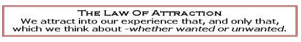
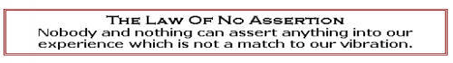
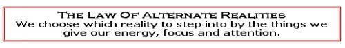
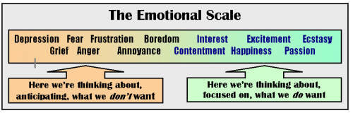

The Law Of Attraction - The Most Absolute Law In The Universe
The
Law Of Attraction turns out to be the big one. It's the basis of everything: 
This means that whatever we spend time thinking about or talking about or
dreaming about, will inevitably be drawn to us.
The
corollary is the Law Of No Assertion: 
This means nobody or nothing (which includes "God", fate, friends, family,
governments, strangers, tsunamis, star signs etc. etc.) can cause us to
experience something that is out of line with the things we are giving our
energy and attention.
Another way of stating this law is the Law Of Alternate Realities - putting it
in terms more closely aligned with the language of modern physics: 
This last version appeals to me - but pick whichever version suits you - they
all mean the same thing - you create your own reality.
Now
let's think a little more on that
"whether wanted or unwanted"
piece from the Law Of Attraction above.
We all have an Emotional Scale. To simplify, we either feel good or we feel bad. If we're not feeling good, then what we're including in our thoughts is what we don't want.

To put it another way - the Universe hears no negatives. So if we are fearful that something might happen, we are attracting it. Nothing - nada - zilch - is more important than feeling good.
Our "work" therefore is to get ourselves to the place where we focus on what we want - to move ourselves up the scale from
Worry -> Hope -> Optimism -> Confidence -> Certainty.
The
more we can move >>> to the right hand end of the scale,
the faster we can manifest what we really want.
So what we’re spending our time thinking about is all-important. And so is how we’re thinking about it. For every subject, we have a resonant point of attraction. If you want to know where yours is on any subject, look around. What you're experiencing is where you're resonating.
For a
minute, pick a topic on which you’d like some change in your life.
For example – say money.
Is your first reaction “not enough”? Every time something you'd like-to-have flashes into your awareness, is the like-to-have immediately drowned out by can’t-afford-it? Or do you get into a feeling of delicious anticipation?
So where does action - doing things - fit into all of this? Well first we need to understand what I call the BE-DO-HAVE™ principle.
In the world I was raised in, action was all important. It didn’t matter whether I wanted to do it, or felt like doing it - I needed the self-discipline to do it anyway. With a combination of hard work and being lucky enough to be in the right place at the right time, maybe things would turn out OK.
Well according to the Law Of Attraction, that’s all hooey. There's no such thing as "luck", and there are no "accidents". Our actions in themselves cannot get us what we want.
But - the Universe is a powerful orchestrator. It always responds to our thoughts and always has us in the right place at the right time. To take advantage of this, we have to reverse the process - to Be-Do-Have.
If we
can see/feel/imagine ourselves where we want to BE,
then we'll be inspired to DO the things
that will allow us to HAVE all that we want.
This may be a lot to swallow (it was for me for a lonnnnng time) but in
these pages, I'm going to take you through my journey with this Law and how I
came to see how universally it determines our existence - despite what seem at
first to be some apparent inconsistencies.
If we look at the way successful people order their lives, we see that many directly acknowledge this Law Of Attraction. Others, as you begin to see the principles they live by, inherently take advantage of it. That is they clearly order their lives according to its principles. Also, there are legions of books on this subject - either directly acknowledging the Law Of Attraction, or giving principles and procedures that are in line with it.
One of the early books was The Power Of Positive Thinking by Norman Vincent Peale which inspired a recent Sherman's Lagoon cartoon in the San Francisco Chronicle.
A picture (or two) is worth a thousand words.
For more information on this topic, you could read Eva Gregory's three part version of the Law Of Attraction. Eva is my life partner and is also the author of her own (highly recommended of course) Feel Good Guide To Prosperity.
Eva and I first learned of the Law Of Attraction from the teachings of "Abraham". This is a great story all by itself - see Abraham-Hicks .
A few Law Of Attraction quotes.
"Man must cease attributing his problems to his environment, and learn again to exercise his will - his personal responsibility." Albert Schweitzer
"The greatest discovery of my generation is that human beings can alter their lives by altering their attitudes of mind.". William James
"Your circumstances may be uncongenial, but they shall not remain so if you only perceive an ideal and strive to reach it. You cannot travel within and stand still without." James Allen
"Whatever your mind can conceive and can believe, it can achieve." Napoleon Hill
"A mental picturing of that which we want, with the complete acceptance and the conviction that it is ours now, will bring it quickly. See it in its 'isness'". Lester Levenson, from The Ultimate Truth
"Let a person radically alter his thoughts, and he will be astonished at the rapid transformation it will effect in the material conditions of his life." James Allen
"Follow your bliss, and doors will open for you that you never knew existed" Joseph Campbell
“I will see it when I believe it.” - Wayne Dyer